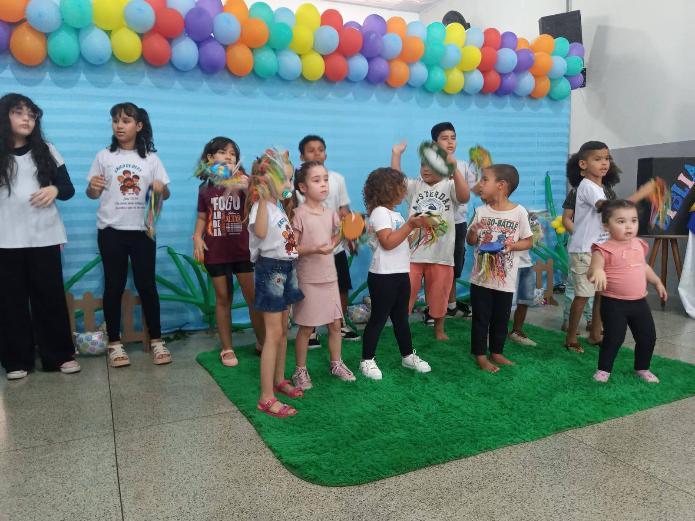

Um lugar para adorar, servir e crescer em fé e comunhão. Participe dos nossos encontros e experimente o amor de Deus.
Descubra uma comunidade acolhedora onde você pode crescer espiritualmente
Experimente momentos de louvor autêntico onde a presença de Deus se manifesta de forma poderosa e transformadora.
Aprofunde-se na Palavra através de estudos relevantes e aplicáveis ao seu dia a dia, fortalecendo sua fé.
Faça parte de uma família espiritual que se importa, apoia e caminha junto em todas as estações da vida.
Espaço seguro e divertido onde as crianças aprendem sobre Deus de forma lúdica e apropriada para cada idade.
Participe de projetos que transformam vidas e levam esperança para comunidades vulneráveis.
Junte-se ao nosso time de louvor e use seus talentos musicais para glorificar a Deus e abençoar vidas.
Veja o que nossos membros têm a dizer sobre nossa comunidade
"Encontrei mais do que uma igreja, encontrei uma família. Os cultos são cheios de vida e a Palavra é pregada com poder e amor."
"Minha vida foi transformada aqui. O ensino bíblico me ajudou a crescer espiritualmente e a enfrentar desafios com fé."
"O acolhimento que recebi desde o primeiro dia foi incrível. Aqui me sinto em casa e parte de algo maior."
Momentos que marcam nossa jornada de fé
Participe dos nossos encontros e fortaleça sua fé
Momento especial de libertação e cura espiritual, orando e buscando renovação através de Deus.
Aprofunde-se na Palavra com estudos bíblicos que transformam vidas e fortalecem a nossa base.
Celebração para a família, com louvor vibrante, palavra inspiradora e comunhão verdadeira.
Você está convidado a fazer parte desta família. Venha nos conhecer e experimente o amor transformador de Cristo.
Entre em ContatoConfira registros dos nossos eventos
